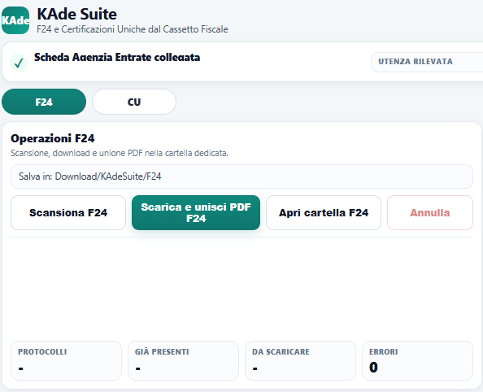
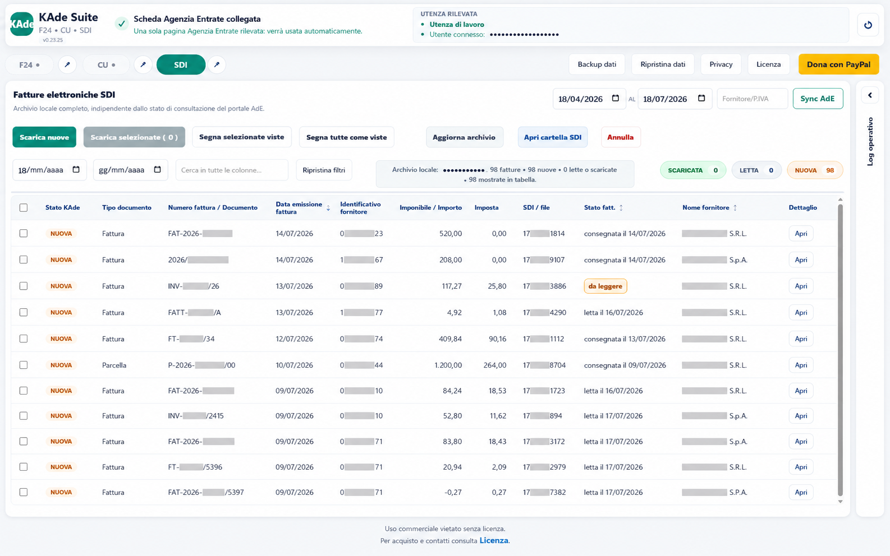

F24
Scansione incrementale, download selettivo o completo, unione delle quietanze PDF, rinomina e controllo dei duplicati.
Incremental scanning, selective or complete downloads, PDF receipt merging, automatic naming and duplicate detection.
KAde Suite riduce le operazioni manuali nei servizi dell’Agenzia delle Entrate: scarica e organizza F24 e CU, sincronizza le fatture elettroniche, estrae localmente l’XML dai P7M e genera il PDF FatturaPA.
KAde Suite reduces manual work across Italian Revenue Agency services: download and organize F24 and CU documents, synchronize electronic invoices, extract XML locally from P7M files and generate FatturaPA PDFs.

Scansione incrementale, download selettivo o completo, unione delle quietanze PDF, rinomina e controllo dei duplicati.
Incremental scanning, selective or complete downloads, PDF receipt merging, automatic naming and duplicate detection.
Recupero progressivo delle Certificazioni Uniche, riconoscimento dell’emittente e archiviazione ordinata per posizione fiscale.
Progressive retrieval of Certificazioni Uniche, issuer recognition and organized storage by tax profile.
Sincronizzazione delle fatture elettroniche, stati NUOVA/LETTA/SCARICATA e download locale di P7M, XML e PDF.
Electronic invoice synchronization, NEW/READ/DOWNLOADED states and local P7M, XML and PDF downloads.
Ogni codice fiscale o partita IVA dispone delle proprie cartelle F24, CU e SDI.
Each tax code or VAT number has separate F24, CU and SDI folders.
Esporta e ricostruisce impostazioni, archivi locali e stato operativo tramite un file JSON verificato.
Export and restore settings, local archives and operational state through a verified JSON file.
Nessun cloud, analytics o invio di documenti allo sviluppatore. L’elaborazione avviene sul dispositivo.
No cloud, analytics or document uploads to the developer. Processing stays on the device.
Una vista locale indipendente dallo stato del portale, con filtri, ricerca, contatori e operazioni selettive.
A local view independent from the portal status, with filters, search, counters and selective actions.

Scarica il file originale, estrae localmente l’XML e genera una rappresentazione PDF FatturaPA con hash SHA-256 della sorgente.
Download the original file, extract XML locally and generate a FatturaPA PDF representation including the source SHA-256 hash.
Le fatture vengono classificate come NUOVA, LETTA o SCARICATA e riconciliate con i file realmente presenti.
Invoices are classified as NEW, READ or DOWNLOADED and reconciled with the files actually stored.
Persona fisica, intermediario, incaricato e persona di fiducia mantengono archivi distinti senza commistione dei dati.
Individuals, intermediaries, delegates and trusted persons keep separate archives without mixing data.
KAde Suite non è un servizio cloud. Documenti, archivi e log tecnici restano sul dispositivo dell’utente. L’estensione non legge password, cookie o token di autenticazione.
KAde Suite is not a cloud service. Documents, archives and technical logs stay on the user’s device. The extension does not read passwords, cookies or authentication tokens.
Sì. KAde Suite non effettua il login e utilizza soltanto la sessione già attiva nel browser.
Yes. KAde Suite does not sign in for you and only uses the browser session already active.
In Download/KAdeSuite/<CF o P.IVA>/F24, CU e SDI.
In Download/KAdeSuite/<tax code or VAT number>/F24, CU and SDI.
No. Non sono presenti analytics, pubblicità o telemetria dello sviluppatore.
No. There are no developer analytics, advertising or telemetry.
KAde Suite è un progetto indipendente distribuito in modalità donationware. Una donazione facoltativa contribuisce allo sviluppo e alla manutenzione.
KAde Suite is an independent donationware project. An optional donation supports development and maintenance.